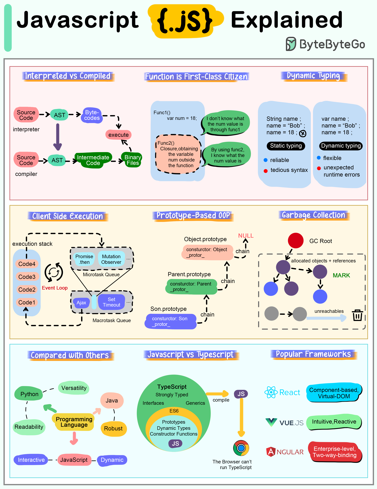

The cheat sheet below shows the most important characteristics of Javascript.
Interpreted Language JavaScript code is executed by the browser or JavaScript engine rather than being compiled into machine language beforehand. This makes it highly portable across different platforms. Modern engines such as V8 utilize Just-In-Time (JIT) technology to compile code into directly executable machine code.
Function is First-Class Citizen In JavaScript, functions are treated as first-class citizens, meaning they can be stored in variables, passed as arguments to other functions, and returned from functions.
Dynamic Typing JavaScript is a loosely typed or dynamic language, meaning we don’t have to declare a variable’s type ahead of time, and the type can change at runtime.
Client-Side Execution JavaScript supports asynchronous programming, allowing operations like reading files, making HTTP requests, or querying databases to run in the background and trigger callbacks or promises when complete. This is particularly useful in web development for improving performance and user experience.
Prototype-Based OOP Unlike class-based object-oriented languages, JavaScript uses prototypes for inheritance. This means that objects can inherit properties and methods from other objects.
Automatic Garbage Collection Garbage collection in JavaScript is a form of automatic memory management. The primary goal of garbage collection is to reclaim memory occupied by objects that are no longer in use by the program, which helps prevent memory leaks and optimizes the performance of the application.
Compared with Other Languages JavaScript is special compared to programming languages like Python or Java because of its position as a major language for web development.
While Python is known to provide good code readability and versatility, and Java is known for its structure and robustness, JavaScript is an interpreted language that runs directly on the browser without compilation, emphasizing flexibility and dynamism.
Relationship with Typescript TypeScript is a superset of JavaScript, which means that it extends JavaScript by adding features to the language, most notably type annotations. This relationship allows any valid JavaScript code to also be considered valid TypeScript code.
Popular Javascript Frameworks React is known for its flexibility and large number of community-driven plugins, while Vue is clean and intuitive with highly integrated and responsive features. Angular, on the other hand, offers a strict set of development specifications for enterprise-level JS development.